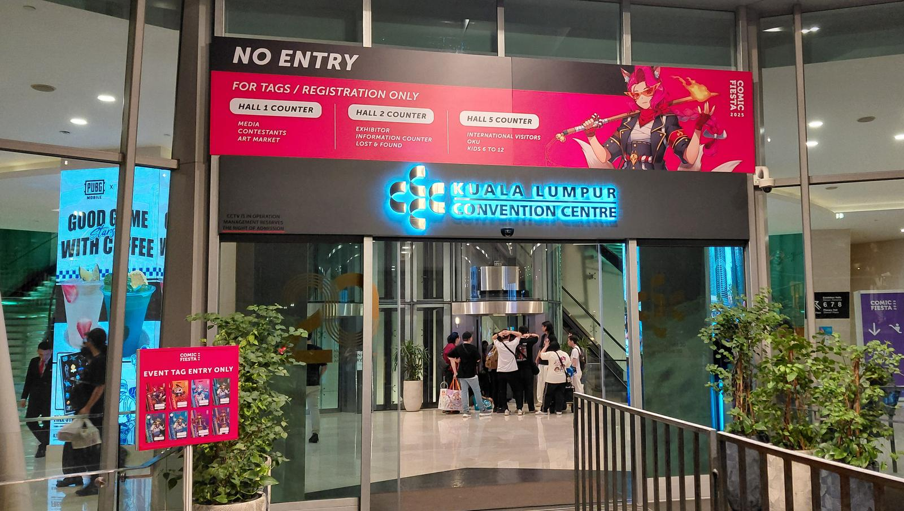

Festivals · Culture
Comic Fiesta 2026
- Dates
- –
- Venue
- Kuala Lumpur Convention Centre
- Location
- Kuala Lumpur, Malaysia
- Format
- In-person
- Category
- Culture
- Industry
- Pop culture
- Organiser
- Comic Fiesta
- Expected attendance
- 75,000
- Official website
- https://comicfiesta.org/cf2026-tickets
About
Dates are local Malaysia dates (MYT, UTC+8).
Topics: anime, comics, games, cosplay.
Official history page: Comic Fiesta 2025 (20-21 December, KL Convention Centre) "Visitor: 75,000".
Sources
Venue
- Kuala Lumpur Convention Centre — Convention centre · Kuala Lumpur, Malaysia · 4,500 capacity